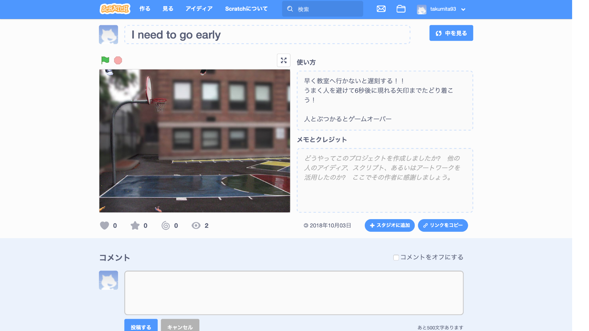
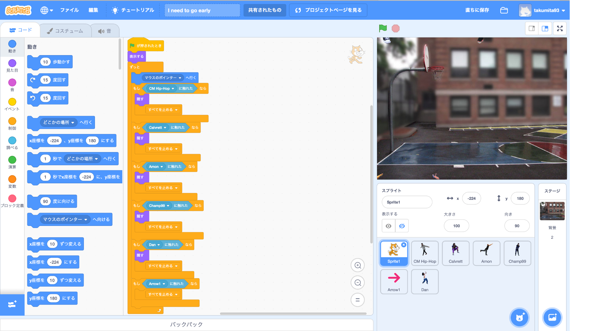

scratchを使ってすごろくイベントを作った
Scratchとは、自由にインタラクティブストーリーやゲーム、アニメーションを作ることができるツールです。
さらに、できあがった作品はオンラインコミュニティで他の人と共有することができます。
↑リンク先
僕はScratchを使って次々と飛び出してくる人を避けるゲームを作りました。


↑作成したコード
授業で作ったのは楽しさがなくできないとストレスがたまりそうだと思ったので、
難しくないものを休憩時に作った
魔法使いがゴーストを倒すゲームでゴーストを倒すとゴーストが増えるように作っているが必ず倒せるようになっているのでストレスは感じないと思う。
戻る